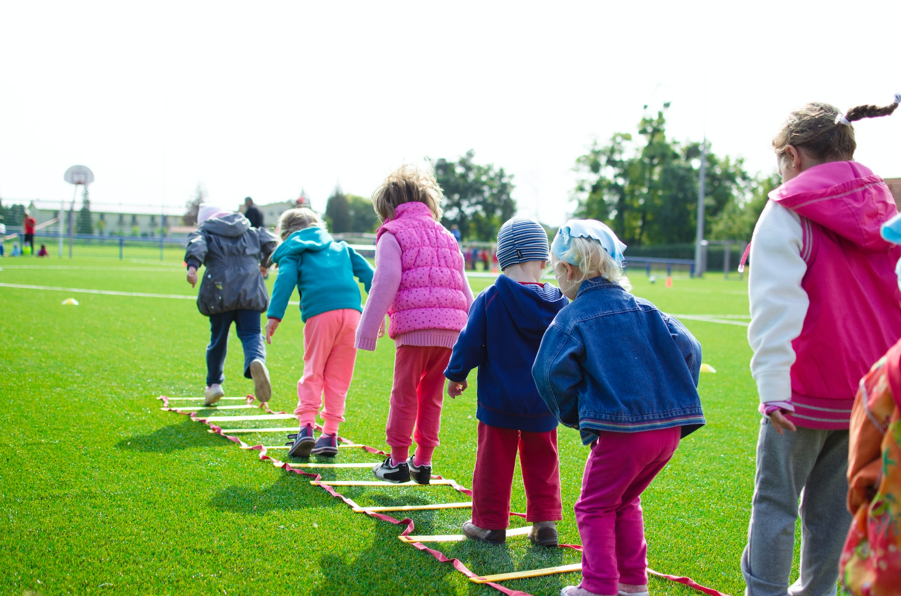

West Pine Elementary School
HOME
UPCOMING EVENTS
RESOURCES
ABOUT US
Upcoming Events
date and time subject to change
Date
Event
Time
11/04/2022
Field Day
7:00 AM - 3:00 PM
11/08/2022
Parent Teacher Conf.
5:00 PM - 7:30 PM
11/11/2022
Book Buddies
3:30 PM - 5:00 PM
11/21/2022
Recycling Assembly
2:30 PM - 3:00 PM
Events for the month of November 2022
Field Day

Parent-Teacher Conference
Book Buddies
Recycling Assembly
Check out this video to learn about all the fun ways you can recycle!